最初に「現預金と経費24ヶ月分」の図が出ます。写真は「見本」で、現預金と経費24ヶ月分を比べています。
見本のデータ・版 2.0.5 のヘルプの写真未定
動画のあと、WEB版と取得後の操作を選べます
WEB版で行う所：ブラウザで見本の数字を見て、選んだ1問を相談する案です。WEB版をメール登録の前後どちらで案内するか、必要な登録・答え方・回数は未定です。
アプリを取得したあとに行う所：決済後の案内から取得・導入し、見本で相談したあと、自分の事業の設定と帳簿の接続へ進みます。メール登録だけではアプリの30日お試しは始まりません。
資料作成・依頼・確認の三つは、元の仕事の記録で比べます。FA・FS・BA・BSの月合計は、アプリの図で見ます。
見本の会社の画面
自分なら何を見たいか、画面の写真で考えてみてください
目標、お金、お客様、働く時間がどう見えるかをご紹介しますので、比べたい数字を一つ選んでご覧ください。
機能の説明を見るメールアドレスを登録して始めるこのあと：短い動画 → 3、40分の動画 → LEVEL 1 のレター → 30日お試しの申し込み
 見本のデータ・版 2.0.5 のヘルプの写真
見本のデータ・版 2.0.5 のヘルプの写真根拠：このページの既存の説明・掲載写真から作成した見出しと紹介文
もっと見る（外注判断：月の12時間と、18時に終える予定を分けて考える）
未定
月の12時間と、18時に終える予定を分けて考える
月に12時間を空けることは、1ヶ月の作業時間の比較です。18時までに終えることは、各日の予定の組み方です。月12時間減っても、毎日18時に終わると決まるわけではありません。
以下は行事がある週の説明用の例です。
| 予定 | 行事前の具体例 |
|---|---|
| 依頼日 | 月曜日10時に資料1本を依頼し、範囲と納期を確認します。 |
| 納期 | 水曜日15時に受け取り、修正が必要ならその日に伝えます。 |
| 確認日 | 木曜日16〜17時に最終確認し、18時までに仕事を終える予定にします。 |
| 家族の行事 | 金曜日は仕事を入れずに済むか、ほかの依頼も含めて確かめます。 |
資料作成・依頼・確認の三つは、元の仕事の記録で比べます。FA・FS・BA・BSの月合計は、アプリの図で見ます。
もっと見る（外注判断：残高の確認日と支払日から、残すお金を確かめる）
残高の確認日と支払日から、残すお金を確かめる
説明用の相談例です。「残高60万円は今月20日に確認しました。外注費5万円は25日、家賃8万円は末日に支払います。30日に生活費20万円と税金10万円を残したいです。確認済みの入金30万円が残高に含まれるかも確かめます。未確認の入金10万円は足さず、追加の外注費を払っても残す条件を守れるか相談したいです。」
支払い後は60万円−5万円−8万円−20万円−10万円＝17万円です。さらに外注費5万円を追加するなら12万円です。他の支払いや入金も確認してから決める説明用の計算で、利益とは別です。
もっと見る（外注判断：資料づくり・依頼・確認の時間を記録して、翌月比べる）
未定
資料づくり・依頼・確認の時間を記録して、翌月比べる
操作例（説明用の案）：資料づくり・依頼・確認に使った開始時刻と終了時刻を、その都度仕事の記録に分けて残します。今月は資料づくり20時間・依頼0時間・確認4時間、翌月は4時間・2時間・6時間と記録し、合計24時間と12時間を比べます。
アプリの入力は上の「⇄ 裏へ」→「業務効率化」→「設定」→「働いた時間（FA・FS・BA・BS）」です。資料作成・依頼・確認の三つは、元の仕事の記録で比べます。FA・FS・BA・BSの月合計は、アプリの図で見ます。
翌月は表の「業務効率化」→「詳細説明を選ぶ」→「仕事測定（FBAS）」で図を開き、推移の「期間を選ぶ」「比べる相手」と対象月を確かめます。資料作成・依頼・確認の三つは、元の仕事の記録で比べます。FA・FS・BA・BSの月合計は、アプリの図で見ます。「未取得」は0時間として扱いません。
相談の例と同じ数字を図で見る
外注前の売上80万円・原価15万円・ほかの経費20万円から45万円が残り、外注費5万円を加えると40万円になる例です。生活費・税金を払う前の額で、説明用に作った数字です。
根拠：案（参謀が書いた下書き）。会話の数字はaimits.htmlの既存の説明用の見本に対応。
もっと見る（外注費と時間の詳しい比較）
差の5万円と、資料作成・依頼・確認の時間を比べる
未定
説明用の数字です。実際の回答・利用実績ではありません。売上80万円・原価15万円・ほかの経費20万円を固定し、外注費5万円を加える場合を比べます。
| 月ごとに比べること | 自分で作る | 5万円で外注する想定 |
|---|---|---|
| 生活費・税金を払う前に残る額 | 45万円 | 40万円 |
| 自分の資料作成 | 20時間 | 4時間 |
| 資料の依頼 | 0時間 | 2時間 |
| 自分の確認 | 4時間 | 6時間 |
| 自分が使う時間の合計 | 24時間 | 12時間 |
| 子供の行事の日に仕事を入れない | 行事の日に資料作成が重ならないか確認 | 依頼先の納期と確認日を行事の前に設定できるか確認 |
| 仕事を終えたい時刻：18時（説明用） | 月合計24時間を、各日の予定に分けて確保できるか確認します。 毎日の18時終了とは別に確かめます。 | 月合計12時間を、各日の予定に分けて確保できるか確認します。 毎日の18時終了とは別に確かめます。 |
この想定では5万円で月12時間を空けられます。任せられる範囲・納期・確認時間を見積もりで確かめ、残したいお金と家族の予定の両方に合うかを決めます。実際に空く時間を保証するものではありません。
根拠：Databox「dashboard-examples」・Klipfolio「gallery」
ご自分が使うつもりで、見本をご覧ください
ここにある写真は、見本のデータで動かした画面です。
お客様の事業の実績や、アプリを使った成果を示したものではありません。
図や数字、説明がどう見えるかをご覧いただけます。
もっと見る（画面別：経営戦略）
根拠：Metabase「dashboards」・DashboardFox「gallery」
経営戦略
目標と、毎日の仕事を一緒に考えられます
経営戦略で必要な粗利や人数、今期の目標を考えられます。
お金、お客様、仕事の情報も見ながら、事業で何を大切にするか決めてください。
写真の画面名から、気になる機能を確かめられます。
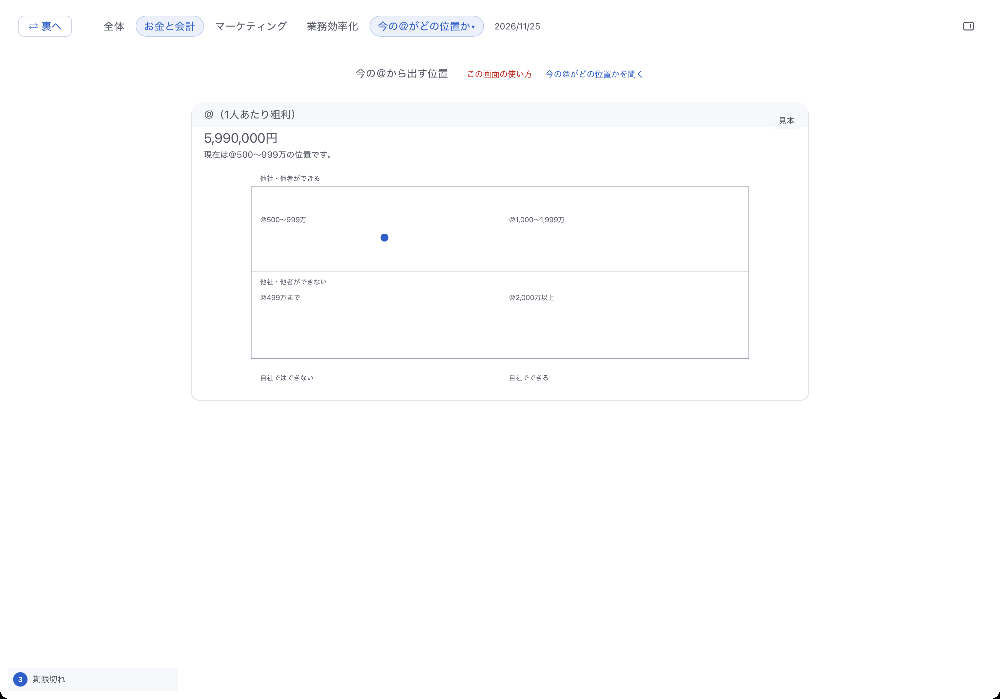
見本のデータ・版 2.0.5 のヘルプの写真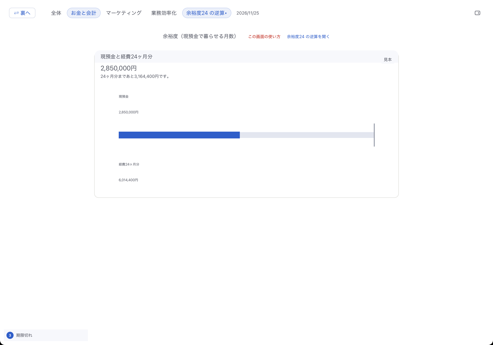
もっと見る（画面別：お金と会計）
根拠：Metabase「dashboards」・DashboardFox「gallery」
お金と会計

写真は「STRAC」です。最初に「先月の粗利の配分」の図が出ます。
見本のデータ・版 2.0.5 のヘルプの写真いまあるお金と、必要なお金を比べられます
現預金や粗利の配分から、ご自分の事業のお金を考えられます。
いまの数字を、目標や必要な経費とも比べてみてください。
図を見たあとに数字と説明を読むと、何を変えるかを考えられます。
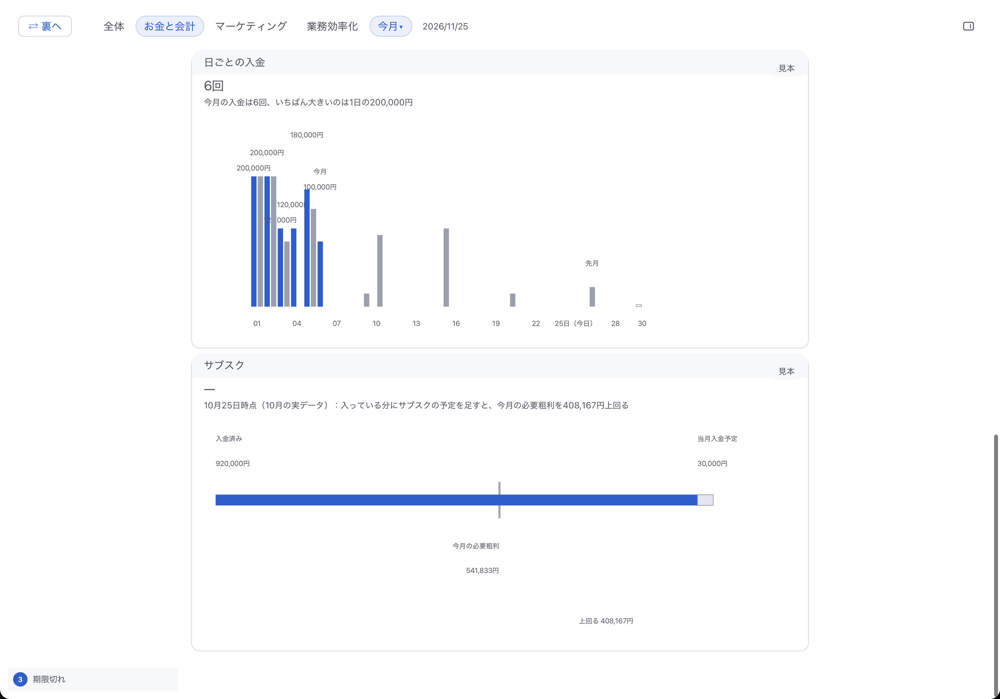
今月の最初の図の写真は下へ送った状態で、「日ごとの入金」「サブスク」が写っています。「売上・経費・利益」「今月の進捗」「赤道日」は下に載せた推移の写真で確認できます。
見本のデータ・版 2.0.5 のヘルプの写真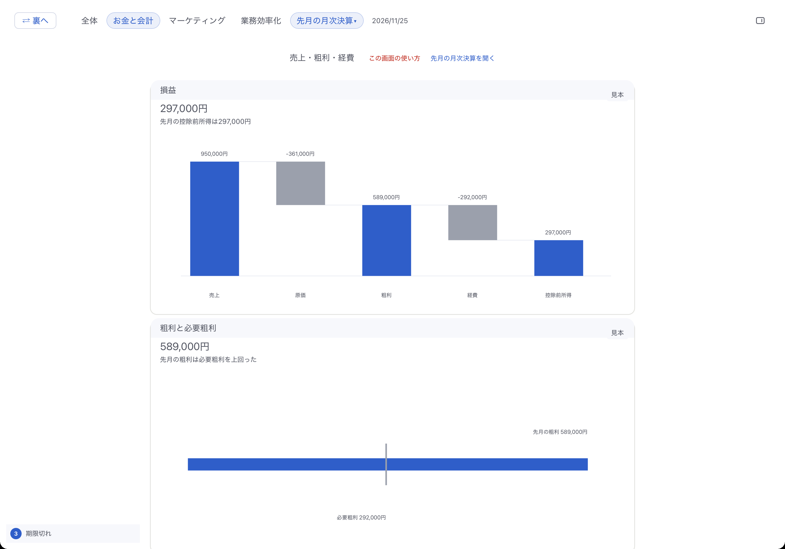
見本のデータ・版 2.0.5 のヘルプの写真先月の最初の図の写真には「損益」「粗利と必要粗利」が写っています。下へ送った写真には「赤道日」「費目の差」があります。
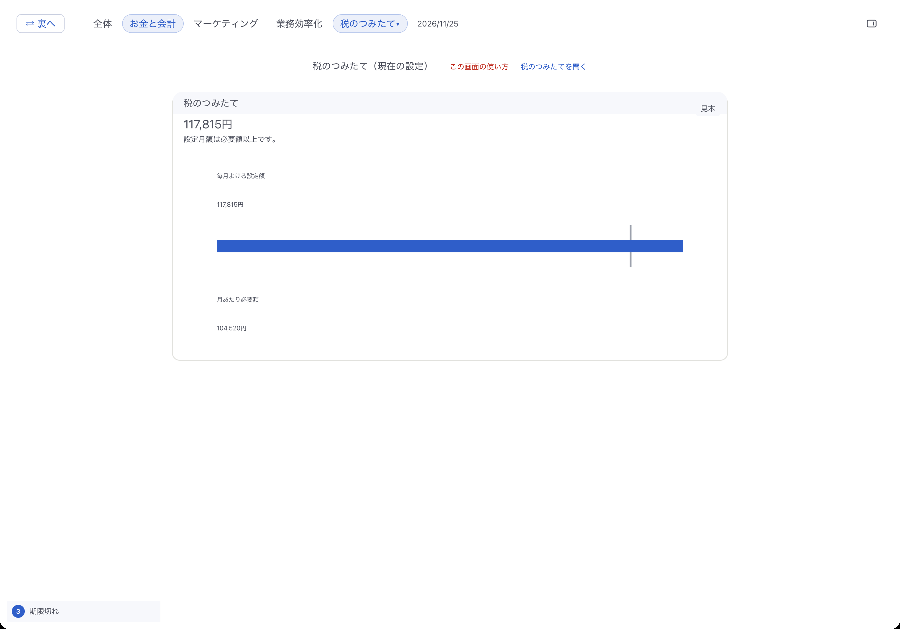
見本のデータ・版 2.0.5 のヘルプの写真表の「詳細説明を選ぶ」から「税のつみたて」を選びます。図・推移・戦術説明は表の余裕度24 の逆算と税のつみたてをご覧ください。
もっと見る（画面別：お客様との関係）
根拠：Metabase「dashboards」・DashboardFox「gallery」
お客様との関係
根拠：kinou_zairyo.md
根拠：kinou_zairyo.md
根拠：kinou_zairyo.md
お客様との取引と、仕事の情報を一緒に見られます
マーケティングで取引の変化を見たり、届けたい相手を考えたりできます。
お金や仕事の画面も使って、事業全体を見ながら判断してください。
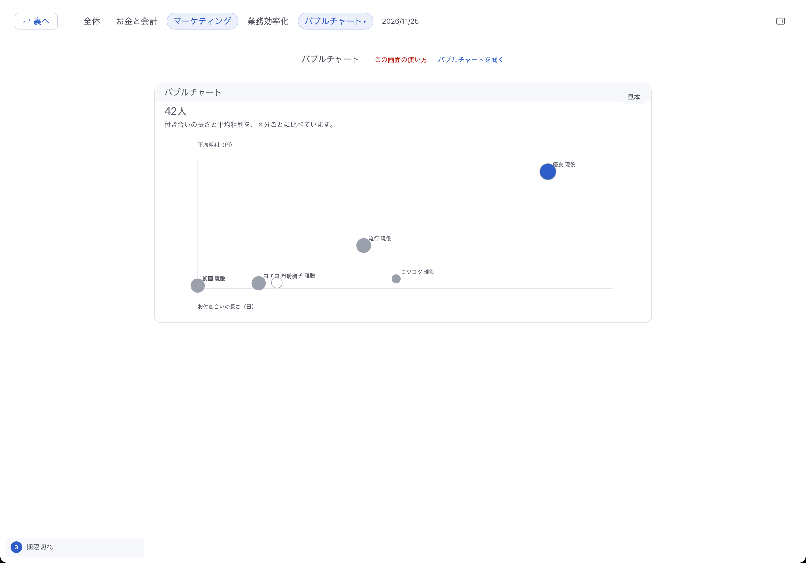
見本のデータ・版 2.0.5 のヘルプの写真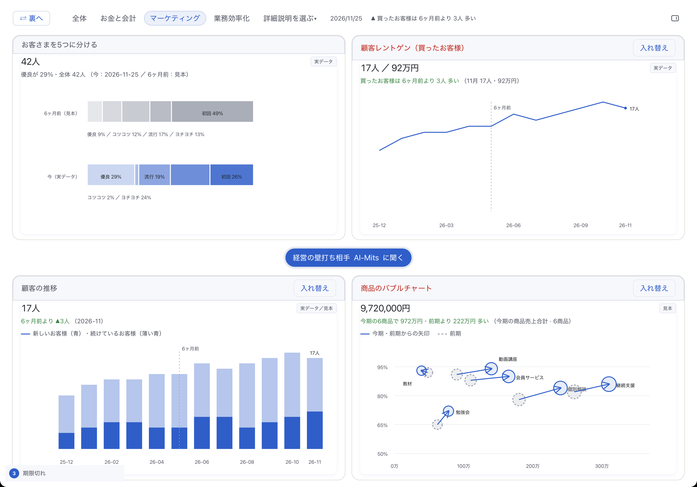
根拠：kinou_zairyo.md（2026-11-25、見本1つで実機確認の記録）・既存写真 img/v205_dashboard_marketing.png。写真内には「実データ／見本」の表示が混在しています。
もっと見る（画面別：業務と働く時間）
根拠：Metabase「dashboards」・DashboardFox「gallery」
業務と働く時間
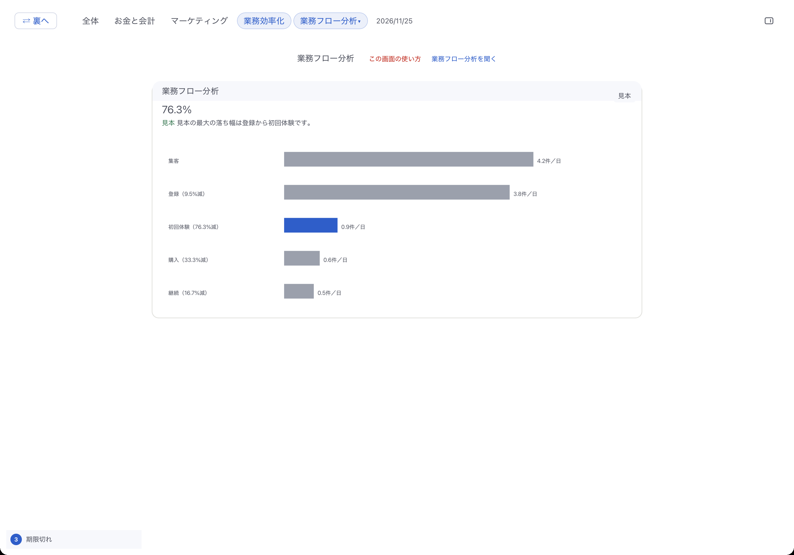
見本のデータ・版 2.0.5 のヘルプの写真最初に「業務フロー分析」の図が出ます。写真は「見本」で、工程ごとの通過率を横棒で見ます。
根拠：kinou_zairyo.md
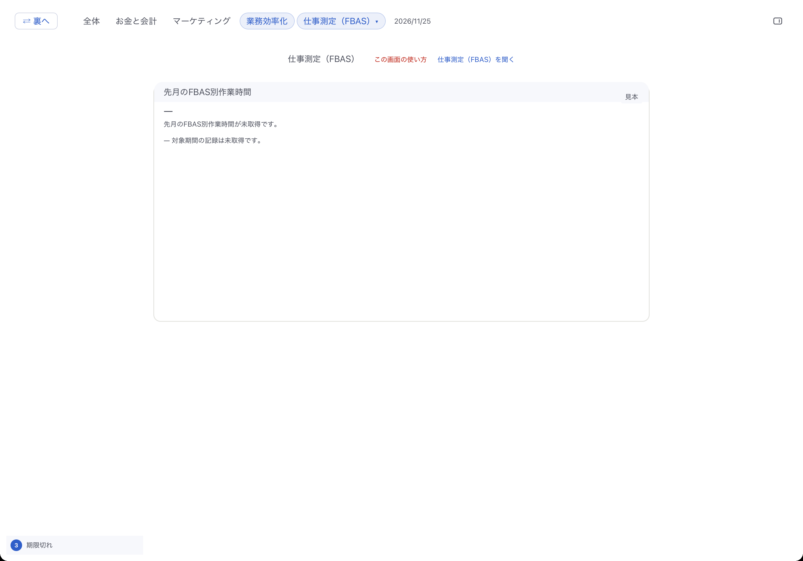
見本のデータ・版 2.0.5 のヘルプの写真最初の「先月のFBAS別作業時間」の画面をご覧いただけますが、写真には「見本」と「先月のFBAS別作業時間が未取得です。」と表示されています。
根拠：kinou_zairyo.md
根拠：kinou_zairyo.md
仕事の流れと、時間の使い方を見直せます
業務フロー分析や仕事測定で、どこを変えるか考えられます。
「見本」や「未取得」の表示があるときは、ご自分の実績と分けて見てください。
仕事の流れ、依頼に使う時間、確認に使う時間を分けて見てください。
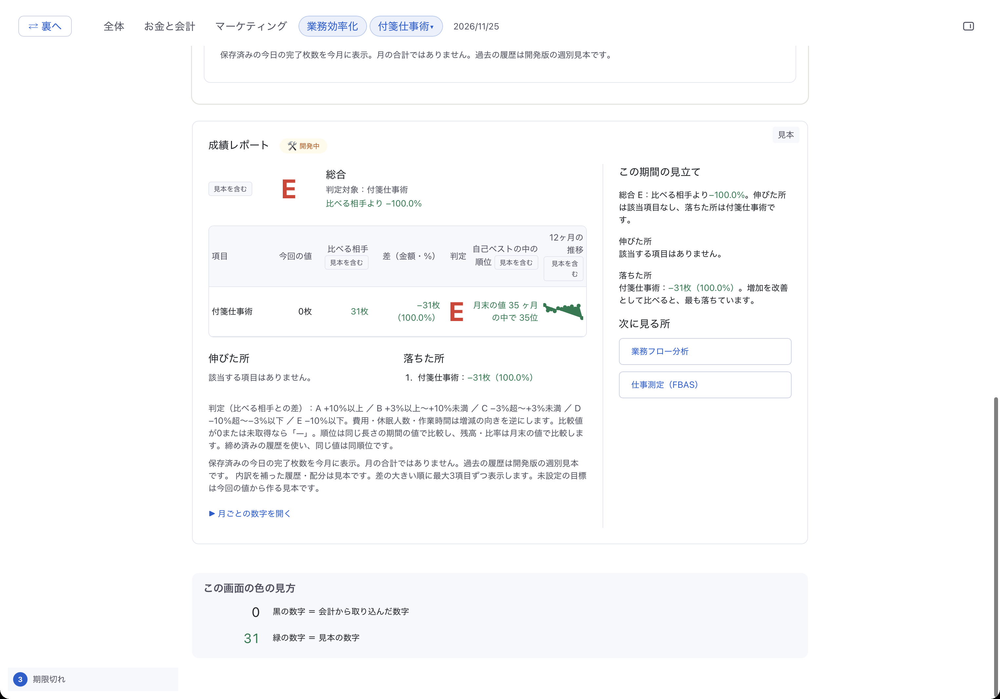
見本のデータ・版 2.0.5 のヘルプの写真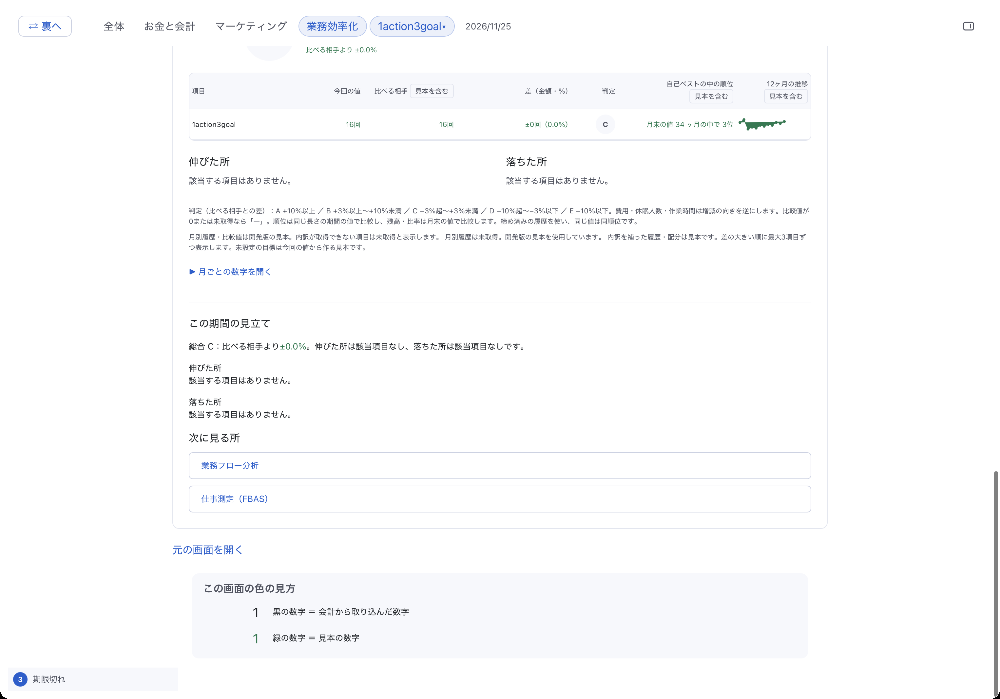
見本のデータ・版 2.0.5 のヘルプの写真表の「業務効率化」の「詳細説明を選ぶ」から「1action3goal」を選びます。写真は下へ送った状態で、「伸びた所」「落ちた所」「この期間の見立て」「次に見る所」が写っています。
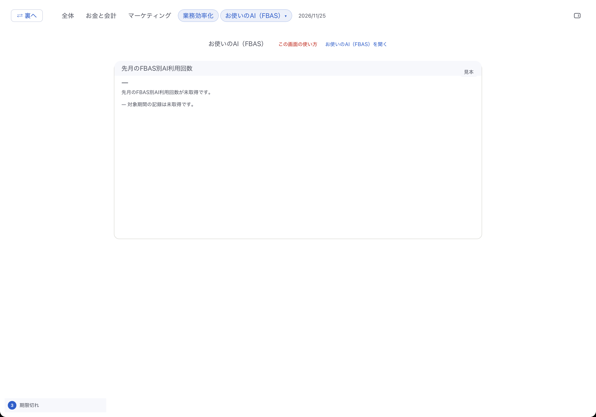
見本のデータ・版 2.0.5 のヘルプの写真最初の「先月のFBAS別AI利用回数」の画面をご覧いただけますが、写真は「見本」で「先月のFBAS別AI利用回数が未取得です。」と表示されています。
この見本にある1action3goalは、開発している機能です。
根拠：Metabase の画面の見本と無料開始
同じ画面を見本の数字で触ってみる 未定オプトインの前に置くか後ろに回すかは未定（FHL 2026 Notes の案は後ろ）
動かしながら、気になる画面を見つけられます
WEB版では、見本の数字で画面を触れます。
図や数字を見ながら、何を相談したいか考えてみてください。
ご自分のパソコンで使うときは、ダウンロードについての説明をご覧ください。
根拠：Tableau「Create and share on Tableau Public」
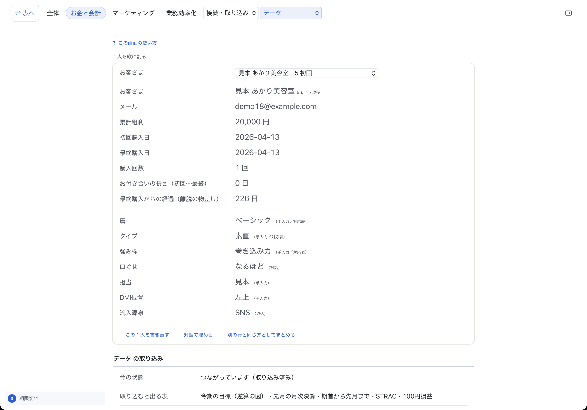
実際の使い方も、これからご紹介していきます
どの画面をどう使うか、具体的な例をご紹介する予定です。
利用者の画面は、ご本人の了承をいただいたものを掲載します。
いま載せている写真は、見本のデータによる画面です。
もっと見る（画面別：比べたい数字を一つ決めて、写真を見てください）
比べたい数字を一つ決めて、写真を見てください
STRACを見るときは
人件費・固定費・未来費・利益の配分を見て、ご自分の事業ならどこを確かめたいか考えてみてください。
月次決算を見るときは
先月の粗利と経費が前月からどう変わったかを見て、売上と残る利益を一緒に考えてみてください。
マーケティングを見るときは
お客様の数や関係が続いているかを見て、誰にどんな仕事を届けるか考えてみてください。
AI-Mitsを見るときは
開いている画面と右の相談欄を比べ、気になった数字についてどう聞きたいか考えてみてください。
根拠：01_The Innovation/_wip/linchpin_nou_no_naka_20261005/経営アプリ_untendai_bullet_20261101.html、01_The Innovation/_wip/linchpin_nou_no_naka_20261005/経営アプリ_untendai_benefit_baf_20261101.html
もっと見る（以前の版：以前との違いを見やすくする画面を、開発しています）
以前との違いを見やすくする画面を、開発しています
ダッシュボード版では、いまの数字と前月・前年との違いを見て、今月何を確かめるか考えられる画面を目指しています。
全体からテーマ、詳細へ進み、変化の理由を確かめられるようにする開発案ですので、上にある版2.0.5の写真とは分けてご覧ください。
根拠：01_The Innovation/mits-reports/private/untendai-risou-plan-20261120/index.html、01_The Innovation/mits-reports/private/untendai-dashboard-omote-ura/index.html、01_The Innovation/mits-reports/private/untendai-dashboard-hidari-4sou/index.html
もっと見る（以前の版：UTAGEに載せた画面も、写真でご覧いただけます）
UTAGEに載せた画面も、写真でご覧いただけます
紹介ページ、確認版のダウンロードページ、版1.77の使い方からご紹介していますので、上にある版2.0.5とは時期の違う画面も含めてご覧いただけます。
Windowsで運転台を開いた見本をご覧ください

運転台のトップ（数字は見本。写真は Windows）
根拠：UTAGE AI-Mitsファネル（PhVVUAIonv5b）
お金を分析する画面をご覧ください

お金・分析。今期の実データ・必要粗利の進み・移動平均・6ポケッツ。赤道日（固定費を回収し終える日）と粗利のギネスは 月次決算 にあります。
根拠：UTAGE AI-Mitsファネル（oHtrsl52qpXg）
STRACの面積図をご覧ください

お金・分析の STRAC 面積図。売上・変動費・粗利・固定費・利益の関係を、面積で見ます。どこを動かすと利益が出るかが目で分かります。
根拠：UTAGE AI-Mitsファネル（oHtrsl52qpXg）
顧客レントゲンの画面をご覧ください

顧客レントゲン。数字と日付は伏せています
根拠：UTAGE AI-Mits＆経営アプリ 使い方・規約（nFT9eIY3N4wr）
目標純利益から今期の目標を考えられます

目標純利益 → 今期の目標 1・2・3
根拠：UTAGE AI-Mits＆経営アプリ 使い方・規約（sDpiAiq7Dofl）
UTAGEの売上一覧を取り込めます

UTAGE 売上一覧 CSV の取り込み
根拠：UTAGE AI-Mits＆経営アプリ 使い方・規約（TEpYBx22hwQJ）
もっと見る（続きの5区画）
「はじめる前に」の画面をご覧ください

「はじめる前に」を表示した画面です。
版1.80.0の使い方の案内にある写真で、操作や表示を見比べていただけます。
根拠：UTAGE AI-Mits＆経営アプリ 使い方・規約（8C5HLu4KXdfY）
見本で動かすか、空のまま始めるかを選べます

見本の数字で動かすか、空のまま始めるかを選ぶ画面です。
版1.80.0の使い方の案内にある写真で、操作や表示を見比べていただけます。
根拠：UTAGE AI-Mits＆経営アプリ 使い方・規約（8C5HLu4KXdfY）
最初にすることを、画面で確かめられます

「はじめにやること」を表示した画面です。
版1.80.0の使い方の案内にある写真で、操作や表示を見比べていただけます。
根拠：UTAGE AI-Mits＆経営アプリ 使い方・規約（8C5HLu4KXdfY）
取り込んだ数字と元の記録を比べられます

取り込みと、元の記録との突き合わせをする画面です。
版1.80.0の使い方の案内にある写真で、操作や表示を見比べていただけます。
根拠：UTAGE AI-Mits＆経営アプリ 使い方・規約（TEpYBx22hwQJ）
CSVから取り込む画面をご覧ください

CSV取り込みをする画面です。
版1.80.0の使い方の案内にある写真で、操作や表示を見比べていただけます。
根拠：UTAGE AI-Mits＆経営アプリ 使い方・規約（TEpYBx22hwQJ）
未定
資料1本の記録から、毎月の確認へ
| 元の記録1行（説明用） | 分類と月合計への加え方 |
|---|---|
| 10月7日 10:00〜11:00／顧客向け資料1本の作成／1時間／FS | この例は顧客へ提供する資料なのでFSに1時間を足します。同じ月の全記録も仕事の目的で分類し、FA・FS・BA・BSそれぞれを合計します。 |
分類の例：提案・販売の資料ならFA、顧客へ提供する資料ならFS、事業の改善計画ならBA、社内の事務資料ならBSです。資料という名前だけで分類を固定しません。
| 時期 | 確認すること |
|---|---|
| 最初の月 | 作業名・開始終了・目的・分類を記録し、同じ月の四分類の合計を入力する案です。未取得を0にしません。 |
| 翌月 | 資料づくり・依頼・確認を元の記録で比べ、四分類の合計と図の対象月・比較相手を照らす案です。所要時間は未計測です。 |